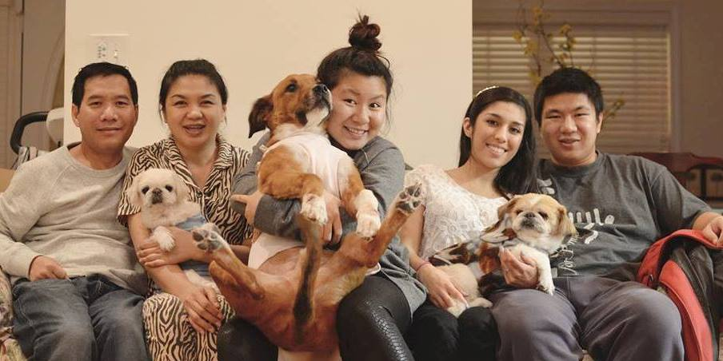

Hoai T Cao (pronounced "GOW") is a developer, designer, photographer, and dog lover born in Ho Chi Minh, Vietnam. After moving to America to dream of a better future, she moved to Atlanta to pursue her ideal degree. While working 2 jobs; between classes, Hoai aims to finish her degree in Computer Science May 2018.
CONNECT WITH ME